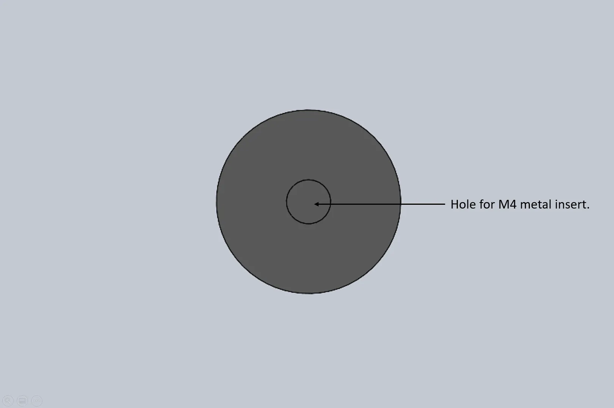

SKADISkaduskala
2023
personal project
personal project
Summary
Skadiskaduskala is a personal project in which I made a DIY version of the popular pegboard of
IKEA named Skadis. As a challenge to see if I could make this board myself with the production
methods at hand. Using the tools and machines available at my workplace. Since IKEA sells these
boards at 25 euros per pegboard I also felt I could make them way cheaper, which was a
motivation because of the number of boards I needed. For production I used laser cutting for the
pegboard and 3D printing for the spacer between the wall and the board. So this guide is a DIY
description for the makers that have these machines available. However, for the pegboard, I
imagine you can also use an electric hand router to make these cuts. This method will probably
result in messy cuts if you use MDF. For the spacer blocks you can just cut some pieces of wood
to the measurements. But 3d printing can result in a more accurate result for these blocks.
Below you can read the guide on how to make these boards. And also some pictures of how it
turned out.
Roles
• CAD modeling
• product analysis
• Lasercutting
• 3d printing
• product analysis
• Lasercutting
• 3d printing
The result
After a lot of measuring, modeling, lasercutting and 3d printing I was able to create boards that
fit the small modules sold by IKEA.
Guide: step 1
The image below shows the full assmebly of the skadiskaduskala. To produce the the skadis board
yourself
you will need 4mm MDF (5mm would be ideal but it's not commonly available). I took the closest
thickness
I could get to the real thing so I can buy the ikea modules or 3d print modules from thingyverse
for
this system. It's good to mention that some of them will have a somewhat loose fit, which I
don't mind.
The plate needs to be 80cm x 60cm to lasercut my file. If you want to adapt these dimensions of
the board
file to your liking you can edit the solidworks file I added. Or search online for the spacing
between
the holes for the ikea board so you can make it yourself too. On the image you can see the way I
attach
the board to the wall as a full assembly.
Guide: step 2
The next image shows the rectangular wall mount block I designed to create space between the
wall and
the board. For aesthetic reasons and to make sure the modules from ikea and the thingyverse fit.
these
blocks can be 3d printed with PLA or a material of your liking. The top hole is meant to fit a
specific
metal M4 insert that I will link to in the parts list. You can also adapt this file to your
liking If
you want to try to 3D print threading or want another insert size. Although I suggest to just
get the M4
inserts. The editable body is in the same part file as the Skadis board. The metal insert is
easy to
melt into the PLA with a soldering iron with a round tip. The bottom slit is there for the screw
that
goes into the plug and the wall. I used quite a small screw and there was little margin for a
bigger
one. So be careful you have the right screw. The slot has space for a screw head diameter of
8mm. It's a
slot so there is a possibility to adjust if the drilling wasn't completely straight. However I
haven't
used this feature since the drilling was spot on so be careful not to completely rely on that
feature.
Guide: step 3
The last image shows the bottom spacer which will not need to be attached to the wall but just
to the
bottom of the board so it hangs parallel to the wall. Here I also used the same M4 insert.

This is just a sidequest you had to hide text as easter eggs which looks like a line